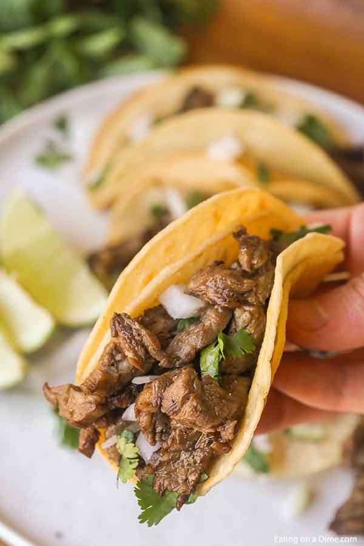

Carne Asada Tacos

Basic but delicious
Carne Asada Tacos are a delicious and flavorful dish featuring thinly sliced and seasoned steak, complemented by the freshness of onions, cilantro, and a burst of citrus from limes. Served on warm corn tortillas, they are a perfect choice for a satisfying meal.
-
Flank Steak
-
Cooking Fat
-
Onions
-
Limes, plus extra for toppings
-
Cilantro
-
Salt and Pepper
-
Butter
-
Corn Tortillas
-
Thinly slice the steak. Then chop into bite-size pieces.
-
In a skillet over medium-high heat, begin to brown the steak in the oil. Add half the onions to the skillet and cook until soft. Save the rest of the onions. Meanwhile, season with salt and pepper. Squeeze the juice of two fresh limes over the meat and onion mixture. Continue cooking until the meat is cooked through.
-
While the steak is cooking, melt the butter in another skillet. Fry the corn tortillas in the melted butter for 1 minute until they are soft. Allow them to cool slightly.
-
Spoon the meat mixture on the tortillas. Top with cilantro, fresh onions, and serve with limes. Salt and pepper to taste.